全てが自分の事なのに、遠いところに理想を描いてそれを求めようと起こす思いに振り回されている？
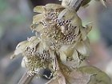
秋になれば実をつけて、冬には枯れ、春になれば芽をだして、夏になれば優雅孟宗。全身をかたむけて今を常に動いて（生活して）いる。あなたのことを言っているのです。
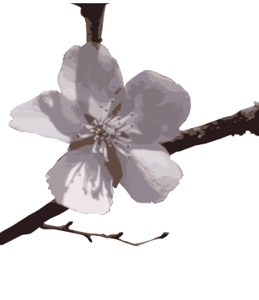
桜が花を咲かすには、芽を出して数年かかります。確かに年月のかかることはあります。しかし、迷っていると言いながら、迷うことのできない生活をしているではないですか？これから何か身に付けて、立派な者になるかと言ったら、とんでもない検討違いです。
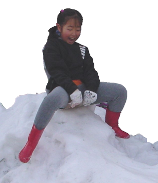
後の事、次の事、色々考えるのもいいですが、それを手放してみたら全てがみんな自分の姿と言うか自分自身のことなんです。
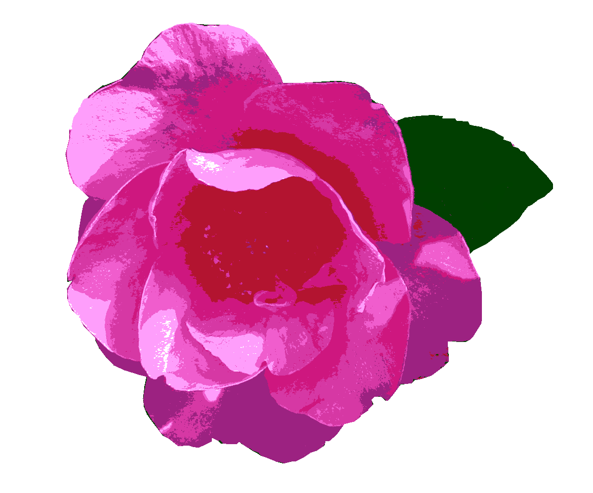
事実とは、思いのわき上がる以前に触れていたもの』想いだって、事実には違いないけれど、色々な事を考えて夢ばかり見ているこれを整理するには、自分自身と向き合うこと以外に道は無いようです。
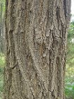
『思い寄せ温もり気付くハリエンジュ』
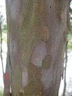
『なめらかなリョウブの肌に光射す』
トップへ戻る
▼自分自身を見つける
１２月に入り、明るい林に花は少ない。下草の越冬の様子や種を見つけて、『こんなところにいたんだね』。秋になれば実をつけて、冬には枯れ、春になれば芽をだして、夏になれば優雅孟宗。全身をかたむけて今を常に動いて（生活して）いる。あなたのことを言っているのです。
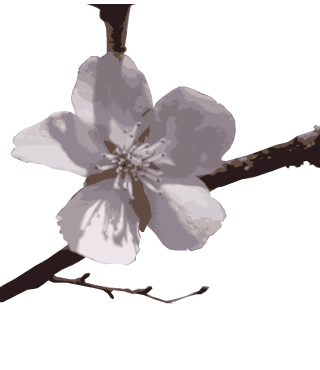
▼年月ばかりではない
１０月～１２月と４月上旬～中旬の２回に分けて咲くフユザクラ。桜が花を咲かすには、芽を出して数年かかります。確かに年月のかかることはあります。しかし、迷っていると言いながら、迷うことのできない生活をしているではないですか？これから何か身に付けて、立派な者になるかと言ったら、とんでもない検討違いです。
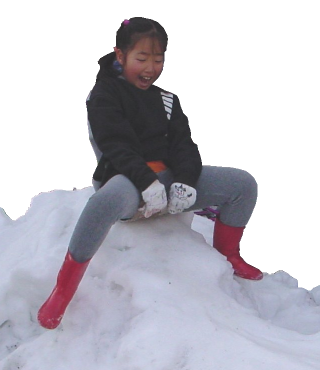
▼雪遊び
大雪が降り、一喜一憂した年。『子供は無邪気でいいな』とその良さが解るならやりましょう。子供にできることは大人もできます。後の事、次の事、色々考えるのもいいですが、それを手放してみたら全てがみんな自分の姿と言うか自分自身のことなんです。
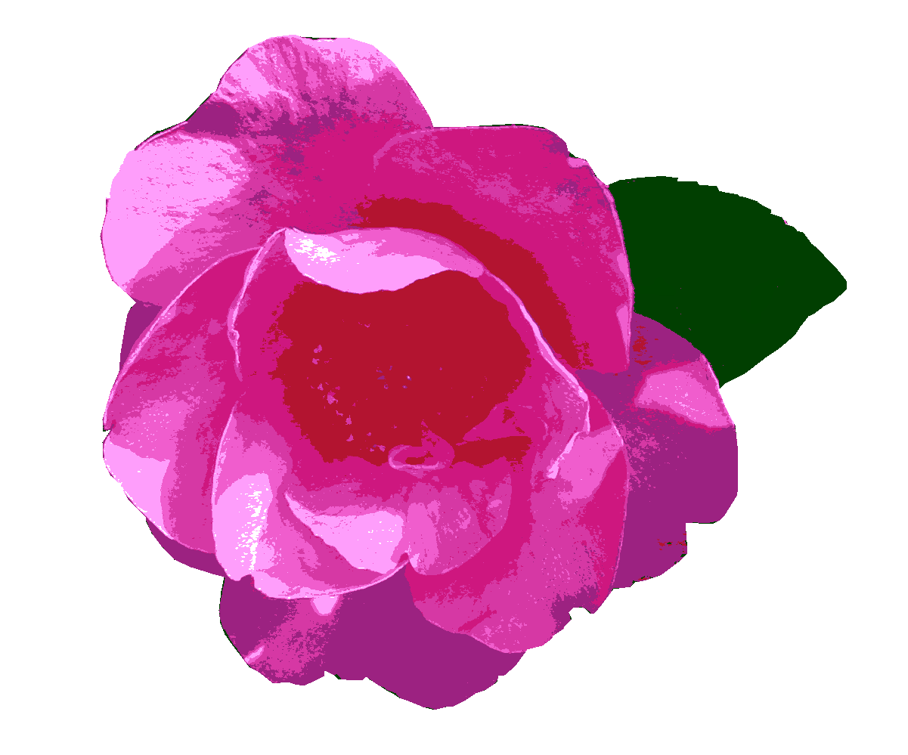
▼想いのわき上がる以前の様子
淡い香りを漂わせるカンツバキ。朝、公園を散歩すると、日差しの温もりや鳥たち、枯れた木々や、霜柱にも味わいを感じます。事実とは、思いのわき上がる以前に触れていたもの』想いだって、事実には違いないけれど、色々な事を考えて夢ばかり見ているこれを整理するには、自分自身と向き合うこと以外に道は無いようです。
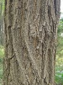
▼林道
花のないこの季節に木肌に触れるのも面白い。この幹は何だろう？北米原産で日本には明治初期に渡来した。別名：ニセアカシア。『思い寄せ温もり気付くハリエンジュ』
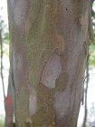
▼射光
リョウブの木肌は薄片が剥れ落ち、なめらかで水彩画で描いたよう。葉は枝先に集まって互生し先が鋭くとがり、ふちに鋸歯がある落葉高木。『なめらかなリョウブの肌に光射す』